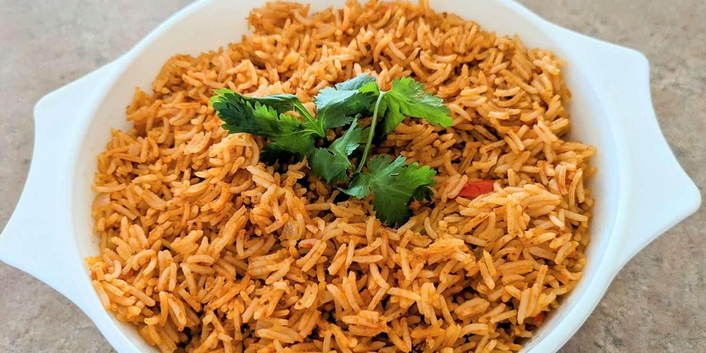

Spanish Rice

Description
Ah, Spain, best known for its famous football clubs, historic landmarks and architecture, and keeping Portugal from sailing off into the Atlantic. Also, this rice!
Ingredients
- 2 tablespoons chopped onion
- 2 tablespoons oil
- 1 1/2 cups uncooked white rice
- 2 cups chicken broth
- 1 cup picante sauce
Steps
- Prepare Oil and Onion: Heat oil in a large, heavy skillet over medium heat. Add onion; cook and stir until tender, about 5 minutes.
- Draw the Rest of the Owl: Add rice; cook and stir until rice begins to turn golden brown. Stir in chicken broth and picante sauce. Reduce heat, cover, and simmer until liquid has been absorbed, about 15 to 20 minutes.